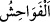

meşhur kumar oyunudur.
Hidâye sahibi der ki: Tavla, satranç, ondört olarak bilinen oyun ve eğlence
mâhiyetindeki her oyun mekruhtur. Kişi bunları kumar olarak oynarsa, bilindiği üzere
kumar kesinlikle haramdır. “Meysir” kelimesi, kumarın ismidir. Şâyet kumar değil de
sadece eğlencesine oynarsa, bu da abestir.
Ölünün ardından ağıt yakmak ve bunu mübah saymak büyük günahtır. Fıskını gizleyip
iyi görünmek büyük günahtır. Yemeği ayıplamak, şarkı, türkü ve eğlenceli şeyler
dinlemek büyük günahtır. Hadis-i şerifte: “Şarkı, türkü ve eğlenceli sesler dinlemek
günah, orada oturmak fâsıklık, bundan zevk almak küfürdür”[118] buyrulmuştur.
Şüphesiz bu hadîs-i şerifte ciddî bir tehdid ve uyarı vardır. Şâyet kişi saz, kaval ve
benzeri bir takım çalgı âletlerini bulundursa, bunları kullanmasa bile günahkâr olur.
Çünkü bunları bulundurmak genelde eğlence içindir. Dans, horon ve benzeri oyunlar da
büyük günahlardandır.
İzinsiz başkasının evine girmek ve başkasının evinin içine bakmak büyük
günahlardandır. Yine saçı sakalı bitmemiş parlak yüzlü gencin yüzüne şehvetle bakmak
büyük günahtır. Zîrâ böyle parlak yüzlü gençler kadın hükmündedirler. Hatta bunların
durumu kadınlardan daha hassas ve naziktir. Bunun için: “Her kadınla beraber iki şeytan
vardır. Her genç çocukla beraber ise on sekiz şeytan vardır” denmiştir.
Muhammed b. Hasan (İmam Muhammed) sakalsız ve parlak yüzlü idi. Ebû Hanîfe
son derece takva sahibi olmasına rağmen gözün hâinliğinden endişe edip onun yüzüne
şehvetle bakmamak için onu derste ya arka tarafa ya da câmi direğinin arkasına
oturturdu.
Bostanü’l-fakih’te şöyle denmektedir: Henüz ergenlik çağına gelmemiş genç ve
çocuklarla, sefih ve ahmak insanlarla oturmak mekruhtur. Çünkü bu durum kişinin heybet
ve saygınlığını zedeler. Bir adamın vefatından sonra rüyada yüzünün simsiyah olduğu
görülmüştü. Bunun sebebi kendisine sorulunca: “Bir gencin yüzüne bakmıştım. İşte
böyle yüzüm ateşte yanıp karardı” demişti.
Emr bi’l-ma’rûf ve nehy ani’l-münkeri terk etmek, başkalarıyla alay etmek, zalim
kişilerden hediye ve ikram kabul etmek büyük günahlardandır. Ulemadan bir topluluk:
“Haram olduğu bilinmiyorsa sultanın hediyeleri zengin fakir herkese helaldir. Bunun
sorumluluğu hediyeyi verenedir” demişlerdir.
İmam Gazzâli şöyle demiştir: Kişinin görünümü iyi olup durumu bilinmiyorsa bu
insanın hediye ve sadakasını almakta bir beis yoktur. Durumu araştırıp incelemek ve
irdelemek gerekli değildir. Zaman bozuldu vs. gibi sözler Müslümana sû-i zandır.
“/fevâhiş” kelimesi fâhişe kelimesinin çoğuludur. Bu ise çirkin yahut çirkinlikte
son derece ileri giden kötü işler demektir.
Kamus’ta şöyle denmiştir: Fâhişe zinâ ve çok çirkin günahlar demektir. Buna göre
“fevâhiş” kelimesinin, öncesinde bulunan “kebâir” kelimesine atfedilmesi, parçanın
bütün üzerine atfı kabilindendir. Bu sûretle atfedilen şeyin son derece çirkin olduğu
ortaya konulmuş olur. “Kebâir” ile “fevâhiş”in aynı şey olduğu da söylenmiştir. Atıf ise